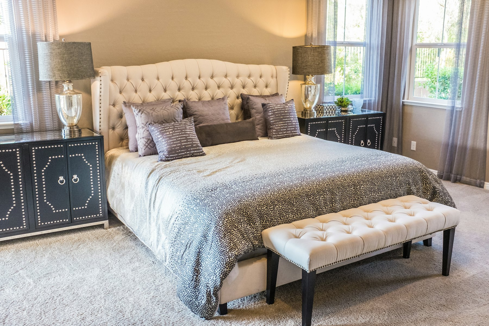

Made in Ichra.
Made with care.
A family workshop in one of Lahore's oldest cloth markets.

We don't just sell bedsheets. We cut them, stitch them, check every seam and fold every one by hand.
Cutting
Fabric is cut to exact measurements, so a King sheet is a true 108×108″.
Stitching
Industrial lock-stitch and overlock, double-fold hems, and reinforced pillow-cover corners.
Checking & packing
Every piece is checked for seams, size and colour, then folded and packed by hand.
From field to bed.
Pakistan grows the cotton, spins the yarn and weaves the cloth. We finish it here in Ichra.
Good to know. Choosing your sheets.
Thread count
This is the number of threads in one square inch. 144–180 is everyday, 200–250 is smoother, and 300 sateen is premium. Yarn quality matters as much as the number.
Cotton or poly-cotton?
Pure cotton breathes better and feels softer, which is ideal for summer. Poly-cotton costs less, wrinkles less and lasts longer through heavy washing.
Why prices change
Fabric is about two-thirds of a sheet's cost, and it follows cotton, yarn and energy prices and the rupee. So our rates change with the season.
Come and see us.
Feel the fabrics in person. The chai is on us.
Get directions